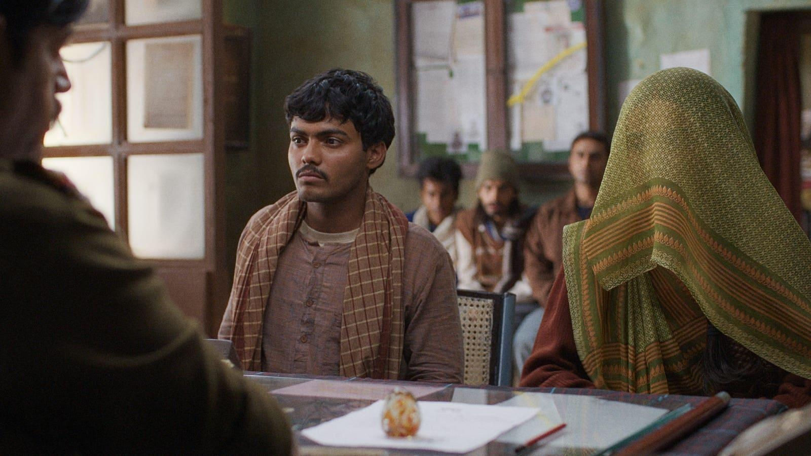

‘Laapata Ladies’ Director Kiran Rao Talks About Tough EditsIndian filmmaker Kiran Rao returns to film direction after a gap of more than a decade with her latest offering, the Hindi film Laapataa Ladies which highlights the unfairness of patriarchal rules in the society and how it impacts women. Starring Nitanshi Goel, Pratibha Ranta, Bhaskar Jha and Sparsh Shrivastava in lead roles, the film releases in theatres on Friday, March 1. In an exclusive interview, Rao opens up on how the film’s lightness came about, what were among the toughest portions to chop off while editing the movie and more. Laapataa Ladies is the story of newly-wedded guys whose brides get lost on their way back from the wedding ceremonies. Jha and Shrivastava play the role of guys searching for their brides while Goel and Ranta play the young brides. Chhaya Kadam and Ravi Kishan play supporting characters in the story that is as much fun as it is essential. On the surface, Laapataa Ladies is a comedy created when a guy mistakes another woman for his own bride, thanks to her veil. What ensues next is an unintentional exchange of brides, women losing their way to find their real selves and some of the men realizing why women are equally entitled to education. During the course, the film underlines various issues that highlight the importance of education for women, and the futility of patriarchal rules. Talking about the film’s journey from a serious social message to comedy, director Rao says it was a conscious choice to not demonize anyone or anything - neither men, nor the society when addressing the problems with how the society functions. “We wanted a sense of inclusion in the film. We wanted to be a part of this conversation and give a solution from the inside, instead of being prescriptive.” On of the impressive parts about Laapataa Ladies is that not only does the film avoid demonizing anyone, the film also steers clear of any sort of tokenism. The men, and the traditionally-inclined women in the movie do not appear as tokens of inclusion - they are well-etched out characters who speak about the reality and rationality of things. Be it Kishan’s cop or Kadam’s strict shopkeeper, the characters are all authentic to the society they belong to. Director Rao says, “The idea was to represent people with different shades, people who can be different. We did not want to have our issues on the nose. Some people may find some things in the film overstated, and I respect their opinion, but our attempt was to show the experiences our characters have instead of bunching it all in a soliloquy by a protagonist.” Asked about her writers on the film, Biplab Goswami, Sneha Desai, and Divyanidhi Sharma, Rao shares the entire journey of the story. Kiran’s former husband, and the producer of Laapataa Ladies Aamir Khan read Goswami’s original story at a screenwriting competition. “He had written a really surprising and sparkling story. The original story was incredibly spicy, but I also felt it could be more of a comedy and not only as much of a drama. The humor was there in the original story, but I believed we could make it as a comedy, and I wanted to develop a few characters. Then, we invited Desai (writes Gujarati theatre, TV shows) and she developed the screenplay in the next six or eight months. She wrote wonderful characters and situations, and after two or three drafts, we reached our final draft.” Sharma was then brought on. “I felt the need to get someone who could clean up the dialect and add on the local humor. He brought a lovely flavor to the writing. At first, Manohar (Kishan’s character) was a regular cop, and he (Sharma) brought this deliciousness to the character. I am glad I was able to get the best of the three best minds and like a conductor, I managed to create symphony with these three composers.” Talking about the tough job of editing the film, Rao says, “Editing was a long process and is one of the hardest parts of filmmaking. There was a really funny scene in which we see Manohar creating theories about what the accused girl must be up to. It was really tough to let go of that scene - the cops enjoying snacks and tea while theorizing why the woman is a thief. We even had a criminal sitting behind the bars inside the police station taking part in it all. Sadly, the sequence did not sit in the larger scheme of things, and we had to cut it out. There were so many other portions, scenes and lines that we had to sacrifice for the sake of the film’s lightness and to keep it crisp.” Rao also thanks Khan and says, “The film began with him. I owe him my second film as he thought of me when he read the story. Otherwise, I was caught in trying to get the right script on paper, and I kept overthinking everything. That was when he just dropped the story in my lap. He was also a very hands-off producer, but one who always came in whenever we needed him.” (This conversation has been edited and condensed for clarity). |
 |